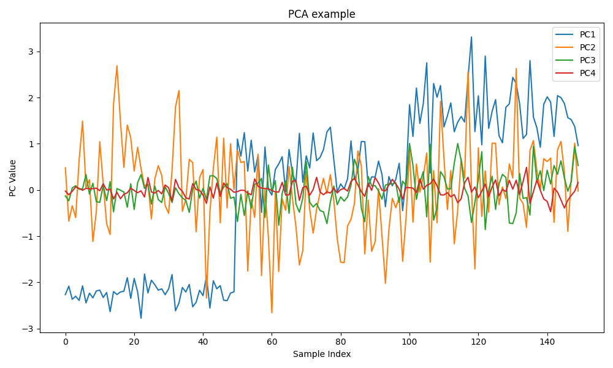

So you just ran a PCA on something, you plot a graph and get this:

Which isn't too bad, it's alright, but let's say there is an anomaly at some point, and you want inspect the point and its neighbors,
compared to the Lightweight charts below and the standard matplotlib graph, which would you rather use: